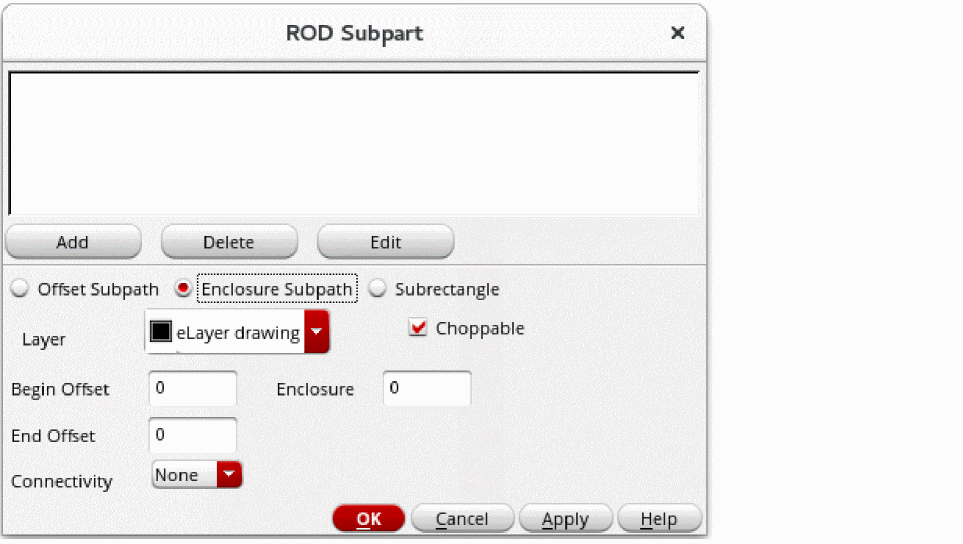

Adding an Enclosure Subpath
You can define a subpath with its centerline on the centerline of the master path and its width calculated using the width of the master path plus a positive or negative enclosure value. This is called an enclosure subpath. The enclosure determines by how much the subpath is enclosed by the master path or by how much the master path is enclosed by the subpath.
To add an enclosure subpath to the master path while creating a multipart path:
-
In the Create Multipart Path form, click the Subpart button.
The ROD Subpart form appears. -
Choose Enclosure Subpath.
 - For Layer, choose the layer for the enclosure subpath.
- Select Choppable if the master path is set to choppable; otherwise, set the enclosure subpath to choppable or not choppable, as you wish.
- For Begin Offset, type a signed integer or floating-point number to start the edge of the subpath before or after the starting edge of the master path.
-
For End Offset, type a signed integer or floating-point number to end the edge of the subpath before or after the ending edge of the master path.
To calculate the width of an enclosure subpath, the system subtracts two times the enclosure value from the width of the master path:Width of Enclosure Subpath = Width of Master Path - (2 * Enclosure Value)
-
For Enclosure, type an integer or floating-point number for the enclosure of the subpath in relation to the master path.
- To define a subpath that is narrower than the master path, type a positive number.
- To define a subpath that is wider than the master path, type a negative number.
-
To use the
minExtensionDistancerule for the subpath layer from the technology file, keep the default value.
IfminExtensionDistancefor the subpath layer is not defined in your technology file and you do not type a value, the system sets the value to zero.
-
For Connectivity, do one of the following:
- If you do not want to define connectivity, leave Connectivity set to None.
- If you want to associate the subpart with a net or specify it as a pin, see Defining Connectivity for a Subpart.
-
To add the new enclosure subpath to the box at the top of the ROD Subpart form, click Add.
The system displays a line of data for the new enclosure subpath in the box. -
To save the new enclosure subpath as part of the MPP in the cellview, click OK or Apply.
You must click OK or Apply to make the new enclosure subpath part of the MPP.
You have defined a new enclosure subpath only for the MPP in the current layout window. If you want to add the new subpath to an MPP template, you need to save your changes to the template.
You can also use the shortcut menu in the Property Editor assistant to add an enclosure subpath.
For information about the overall steps involved in creating an MPP, see Flow for Creating Multipart Paths.
Related Topics
Return to top